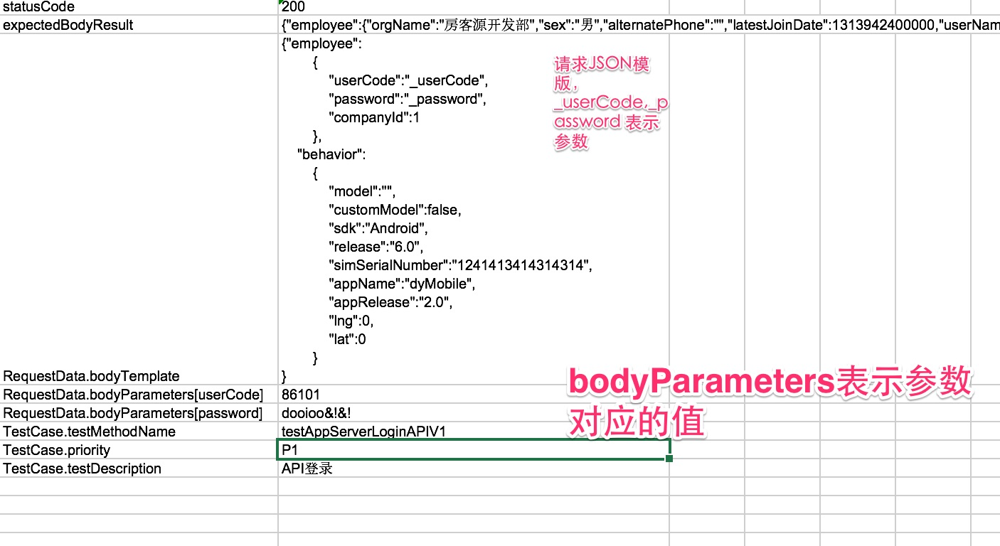

API自动化测试-进阶
API自动化测试基础已经介绍了进行API测试基础内容的介绍,里面介绍一些稍微复杂一点的API测试 主要包括:
- 有请求包体的请求
- 复杂请求返回值(动态值)的验证
有请求包体的接口的测试用例
- 根据接口说明生成代码
以下是一个API的概要说明:
POST /oms/v1/login
APP SERVER
http://appserver.Domain.net
http://appserver.Domain.org
http://appserver.Domain.com
请求参数:
{"employee":
{
"userCode":"108951",
"password":"Domain&!&!",
"companyId":1
},
"behavior":
{
"model":"",
"customModel":false,
"sdk":"Android",
"release":"6.0",
"simSerialNumber":"1241413414314314",
"appName":"dyMobile",
"appRelease":"2.0",
"lng":0,
"lat":0
}
}

根据以上内容,我们可以写出我们自己的API描述文件:
{
"apiDomainName": "appserver",
"contentType": "application/json",
"headers": {},
"method": "post",
"pathParameters": [],
"queryParameters": [],
"resourceURL": "/oms/v1/login"
}
- 通过代码生成测试代码 (参考API自动化测试基础)
- 添加测试数据

这样整个一个请求使用body的就做好了,可以通过这个来访问这个接口.
验证动态内容
以上API得到的如下内容,可以发现有些内容其实有可能会发生变化的,但是这些来源都是数据库的内容, 可以和数据库的内容比较:
{
"employee": {
"orgName": "房客源开发部",
"sex": "男",
"alternatePhone": "",
"latestJoinDate": 1313942400000,
"userName": "KEVIN",
"userCode": 908932,
"orgId": 21467,
"showedPhone": "13636505095",
"positionName": "软件工程师",
"password": "NothingTOFind",
"companyId": 1,
"joinDate": 1313942400000,
"mobilePhone": "13300086101",
"orgLongCode": "12020001/150103155238/12020006/140214094131/140408151141",
"status": "正式"
},
"token": {
"token": 1450949656336086101
}
}
验证方式:
实际上我们把需要验证的字段值放到了一个Map里面,然后用SQL把实际的期望值放到一个Map里面,然后再比较这两个值.
Map<String, String> employeeInfo = (Map<String, String>) JSONHelper.toBean(api.getResponse(), Map.class).get("employee");
Map<String, Object> employeeDBInfo =
SpringJdbcTemplateUtils.useDataBase(AppName.OMS).getAllRawResult("select * " +
"from v_employee where userCode = 12389032").get(0);
SoftAssertion sa = new SoftAssertion();
for (Map.Entry<String,Object> entry : employeeDBInfo.entrySet()) {
sa.assertEquals(entry.getValue(),employeeInfo.get(entry.getKey()),"检查字段"+entry.getKey());
}